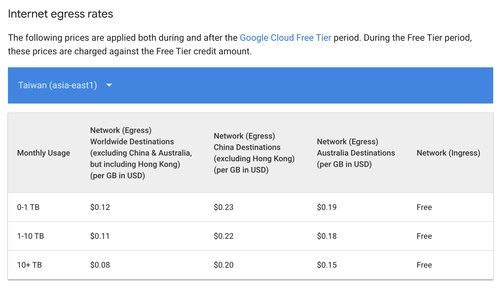

[GCP] 四個情境 | 一次掌握 GCP流量計價
Status: Completed
前言
GCP計價表格這麼多，要怎麼看呢？往往是第一次使用GCP User的痛點，本文試者用四種情境「GCP內部虛機溝通」、「外部User存」、「GCP內部虛機存取Google服務」、「使用Interconnect專線由地端送資料進去」, 協助你了解在不同情況下計價的方式。

▌主機傳出（下載）的流量：
假設網站伺服務上面有各式圖片、網頁語法HTML、CSS、JS，只要一個客戶來瀏覽網站頁面，客戶在該主機瀏覽的行為，等於下載行為其總size包括圖片、HTML、CSS、JS檔案大小的總和，就會被計費的傳出流量。
▌主機傳入（上傳）的流量：
由您或是網站商或是任何人上傳新的圖片；或是修改後網頁語法CSS、JS檔案；這些檔案大小的總和為傳入主機的流量，此項不計費。
以下假設場景說明，換算單位均為$美金
你也可以用GCP Pricing Calculator (計算機) 協助你試算
傳出流量又依照傳到哪一個國家而有不同的單價，照實填寫即可，或是以網站的主要客群所在地為主也可以
#1 GCP內部虛機溝通 [1]
(VM-VM egress pricing within Google Cloud)
FREE同region, 同zone SQL服務器送data → FTP服務器計費同region, 不同zone SQL服務器送data → FTP服務器不同zone$0.01 per GB, 10GB data送到 → FTP服務器 = 0.1美金不同region以Asia為例 $0.05 per GB, 10GB data送到 → FTP服務器 = 0.5美金
#2 外部User存取 [2]
(Internet egress rates)
計費外部User 下載 ← FTP服務器上的檔案 (*1TB內的計價, 下載量若超過10TB會更便[2])#1 Taiwan(asia-east1)為例
User在台灣下載pdf檔案$0.12 per GB, FTP服務器以 10GB data下載量換算$0.12 * 10 = 1.2 美金
$0.12 per GB, FTP服務器以 1TB data data下載量換算$0.12 * 1000 = 120 美金
#2 London(europe-west2)為例
User在歐洲下載pdf檔案$0.02 per GB, FTP服務器以 10GB data下載量換算$0.02 * 10 = 0.2 美金
$0.02 per GB, FTP服務器以 1TB data下載量換算$0.02 * 1000 = 20 美金
#3 GCP內部虛機存取Google服務[3]
FREESQL服務器送data → Google Drive,
#4 地端送資料進去GCP[4]
情境是使用interconnect搭建專線
計費DR備份open data至 → GCP Cloud Storage- $0.042 per GB, DR備份以 10GB data下載量換算$0.042 * 10 = 0.042 美金
- $0.042 per GB, DR備份以 1TB data下載量換算$0.042 * 1000 = 42 美金
References
[1] https://cloud.google.com/vpc/network-pricing#egress-within-gcp
[2] https://cloud.google.com/vpc/network-pricing#internet_egress
[3] [https://cloud.google.com/vpc/network-pricing#egress-to service](https://cloud.google.com/vpc/network-pricing#egress-to service)
[4] https://cloud.google.com/vpc/network-pricing#partner-pricing